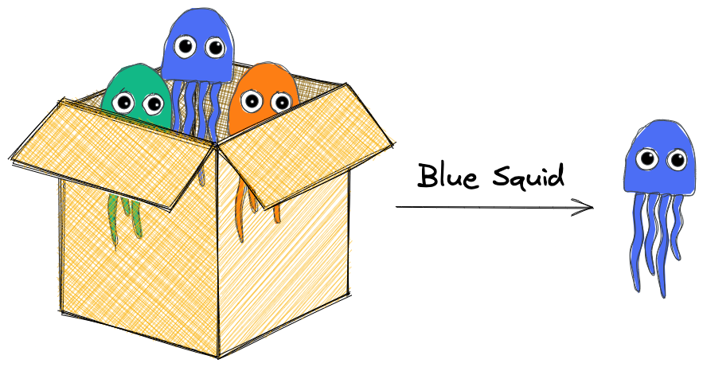

4.6. Get Certain Values From a DataFrame#

This section contains some methods to get specific values of a pandas DataFrame or a pandas Series.
4.7. Access a Group of Rows with loc and iloc#
You can access a group of rows by either using loc or iloc.
iloc selects values based on positions while loc selects values based on labels.
import pandas as pd
s = pd.Series(['a', 'b', 'c', 'd'], index=[20, 21, 22, 23])
s
20 a
21 b
22 c
23 d
dtype: object
# Get the value at the position 0
s.iloc[0]
'a'
# Get the value with the index of 20.
s.loc[20]
'a'
4.7.1. pd.Series.between: Select Rows in a Pandas Series Containing Values Between 2 Numbers#
To get the values that are smaller than the upper bound and larger than the lower bound, use the pandas.Series.between method.
In the code below, I obtained the values between 0 and 10 using between.
import pandas as pd
s = pd.Series([5, 2, 15, 13, 6, 10])
s[s.between(0, 10)]
0 5
1 2
4 6
5 10
dtype: int64
4.7.2. pandas.Series.pct_change: Find The Percentage Change Between The Current and a Prior Element in a pandas Series#
If you want to find the percentage change between the current and a prior element in a pandas Series, use the pct_change method.
In the example below, 35 is 75% larger than 20, and 10 is 71.4% smaller than 35.
import pandas as pd
df = pd.DataFrame({"a": [20, 35, 10], "b": [1, 2, 3]})
df
| a | b | |
|---|---|---|
| 0 | 20 | 1 |
| 1 | 35 | 2 |
| 2 | 10 | 3 |
df.a.pct_change()
0 NaN
1 0.750000
2 -0.714286
Name: a, dtype: float64
4.7.3. Calculate the Difference Between Rows of a pandas DataFrame#
If you want to get the difference between rows of a pandas DataFrame, use df.diff().
import pandas as pd
df = pd.DataFrame({"a": [1, 2, 3], "b": [2, 3, 4]})
df
| a | b | |
|---|---|---|
| 0 | 1 | 2 |
| 1 | 2 | 3 |
| 2 | 3 | 4 |
diff = df.diff()
diff
| a | b | |
|---|---|---|
| 0 | NaN | NaN |
| 1 | 1.0 | 1.0 |
| 2 | 1.0 | 1.0 |
Adjust the periods argument to shift more than one period for calculating the difference.
diff2 = df.diff(periods=2)
diff2
| a | b | |
|---|---|---|
| 0 | NaN | NaN |
| 1 | NaN | NaN |
| 2 | 2.0 | 2.0 |
4.7.4. DataFrame.diff and DataFrame.shift: Take the Difference Between Rows Within a Column in pandas#
If you want to get the difference between rows within a column, use DataFrame.diff().
import pandas as pd
df = pd.DataFrame({"a": [1, 2, 3, 4], "b": [2, 3, 4, 6]})
diff = df.diff()
diff
| a | b | |
|---|---|---|
| 0 | NaN | NaN |
| 1 | 1.0 | 1.0 |
| 2 | 1.0 | 1.0 |
| 3 | 1.0 | 2.0 |
This will leave the first index null. You can shift the rows up to match the first difference with the first index using DataFrame.shift(-1).
shift = diff.shift(-1)
shift
| a | b | |
|---|---|---|
| 0 | 1.0 | 1.0 |
| 1 | 1.0 | 1.0 |
| 2 | 1.0 | 2.0 |
| 3 | NaN | NaN |
processed_df = shift.dropna()
processed_df
| a | b | |
|---|---|---|
| 0 | 1.0 | 1.0 |
| 1 | 1.0 | 1.0 |
| 2 | 1.0 | 2.0 |
4.7.5. Turn a pandas Series into a NumPy Array#
If you want to turn a pandas Series into a NumPy array, use Series.values.
import pandas as pd
s = pd.Series(["apple", "orange", "grape"])
s.values
array(['apple', 'orange', 'grape'], dtype=object)
4.7.6. df.to_dict: Turn a DataFrame into a Dictionary#
To turn a DataFrame into a Python dictionary, use df.to_dict().
import pandas as pd
df = pd.DataFrame({"fruits": ["apple", "orange", "grape"], "price": [1, 2, 3]})
print(df)
fruits price
0 apple 1
1 orange 2
2 grape 3
This will return a dictionary whose keys are columns and values are rows.
df.to_dict()
{'fruits': {0: 'apple', 1: 'orange', 2: 'grape'}, 'price': {0: 1, 1: 2, 2: 3}}
However, if you prefer to get a list of dictionaries whose elements are rows, use df.to_dict(orient='records') instead.
df.to_dict(orient="records")
[{'fruits': 'apple', 'price': 1},
{'fruits': 'orange', 'price': 2},
{'fruits': 'grape', 'price': 3}]
4.7.7. Get Count and Percentage of a Value in a Column#
If you want to get the count of each value in a column, use value_counts.
import pandas as pd
size = pd.Series(['S', 'S', 'M', 'L', 'M', 'M'])
size.value_counts()
M 3
S 2
L 1
dtype: int64
However, If you want to get the percentage of each value in a column, use value_counts(normalize=True).
size.value_counts(normalize=True)
M 0.500000
S 0.333333
L 0.166667
dtype: float64
4.7.8. pandas.DataFrame.corrwith: Compute Pairwise Correlation Between 2 DataFrame#
If you want to compute correlation between rows or columns of two DataFrame, use corrwith.
import pandas as pd
df1 = pd.DataFrame({"a": [1, 2, 3, 4], "b": [2, 3, 4, 6]})
df2 = pd.DataFrame({"a": [1, 2, 3, 3], "b": [2, 2, 4, 4]})
df1.corrwith(df2)
a 0.943880
b 0.845154
dtype: float64
4.7.9. pandas.cut: Bin a DataFrame’s values into Discrete Intervals#
If you want to bin your Dataframe’s values into discrete intervals, use pandas.cut.
import pandas as pd
df = pd.DataFrame({"a": [1, 3, 7, 11, 14, 17]})
bins = [0, 5, 10, 15, 20]
df["binned"] = pd.cut(df["a"], bins=bins)
print(df)
a binned
0 1 (0, 5]
1 3 (0, 5]
2 7 (5, 10]
3 11 (10, 15]
4 14 (10, 15]
5 17 (15, 20]
4.7.10. pandas.qcut: Bin a DataFrame’s Values into Equal-Sized Intervals#
If you want to bin a column’s values into intervals that contain roughly the same number of elements, use pandas.qcut.
In the example below, the values of a are separated into 3 intervals, each of which contains 2 elements.
import pandas as pd
df = pd.DataFrame({"a": [1, 3, 7, 11, 14, 17]})
df["binned"] = pd.qcut(df["a"], q=3)
df
| a | binned | |
|---|---|---|
| 0 | 1 | (0.999, 5.667] |
| 1 | 3 | (0.999, 5.667] |
| 2 | 7 | (5.667, 12.0] |
| 3 | 11 | (5.667, 12.0] |
| 4 | 14 | (12.0, 17.0] |
| 5 | 17 | (12.0, 17.0] |
df.binned.value_counts()
(0.999, 5.667] 2
(5.667, 12.0] 2
(12.0, 17.0] 2
Name: binned, dtype: int64
4.7.11. DataFrame.cumsum: Get Cumulative Sum Over Each Column#
If you want to get a cumulative sum over each column in a DataFrame, use cumsum.
import pandas as pd
df = pd.DataFrame({"a": [1, 2, 3], "b": [4, 5, 6]})
df
| a | b | |
|---|---|---|
| 0 | 1 | 4 |
| 1 | 2 | 5 |
| 2 | 3 | 6 |
df.cumsum()
| a | b | |
|---|---|---|
| 0 | 1 | 4 |
| 1 | 3 | 9 |
| 2 | 6 | 15 |
4.7.12. pandas.DataFrame.cummax: Get the Cumulative Maximum#
The cumulative maximum is the maximum of the numbers starting from 0 to the current index. If you want to get the cumulative maximum of a pandas DataFrame/Series, use cummax.
In the index 1 of the series below, since 4 > 2, the cumulative max at the index 1 is 4.
import pandas as pd
nums = pd.Series([4, 2, 5, 1, 6])
nums.cummax()
0 4
1 4
2 5
3 5
4 6
dtype: int64
4.7.13. Get the Sum of All Columns in a pandas DataFrame#
If you want to take the sum of all columns, use sum(axis=1).
import pandas as pd
df = pd.DataFrame({"a": [1, 2, 3], "b": [4, 5, 6]})
df
| a | b | |
|---|---|---|
| 0 | 1 | 4 |
| 1 | 2 | 5 |
| 2 | 3 | 6 |
df.sum(axis=1)
0 5
1 7
2 9
dtype: int64
If you want to take the sum of all rows, use sum(axis=0).
df.sum(axis=0)
a 6
b 15
dtype: int64